A drunkard stands at some integer on a number line. At each step he moves
either left or right to the adjacent number. He chooses the left
or right with equal probability.
Let $S_n$ be his position after $n$ steps,
for $n=0,...,10.$ We may draw a graph of $S_n$
versus $n$ using a zigzag line like the one shown below.
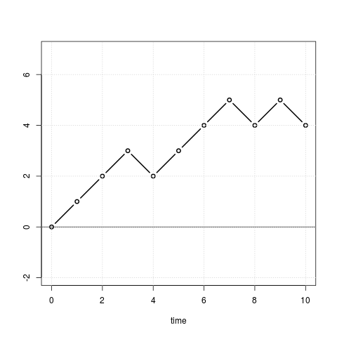
Random walk
The asp=1 in the plot command
keeps the plot area aspect ratio equal to 1, i.e., a
square. The abline command draws a horizontal line
through 0.
x = sample(c(-1,1), 100, rep=T)
plot(cumsum(x),ylab='random walk', xlab='time', ty='l',asp=1)
abline(h=0)
Share market values show such behaviour.
Clearly, there are $2^{10}$ such possible paths. Since the
man is a drunkard we assume that all these are equally likely.
EXAMPLE 1:
Find the probability that he ends up at his starting position
after 10 steps.
SOLUTION:
It is the
total number of paths from $(0,0)$ to $(10,0)$ divided
by $2^{10}.$ Now, each such path must have the same number
of up's and down's. So the number is $\binom{10}{5}.$
■
EXERCISE 1: Find the probability that the drunkard ends up at any given
$k\in{\mathbb Z}$ in exactly $n$ steps.
Any path from time $m$ to $n$ (with $m<n$)
will be considered as a function $\pi:\{m,...,n\}\rightarrow{\mathbb Z}.$
If, for example,
the path passes through some $(3,4)$ then we
have $\pi(3)=4.$
The set of all paths from a point $\alpha$ to a
point $\beta$ will be denoted by $PATH(\alpha,\beta).$
For example, if $\alpha = (0,0)$ and $\beta = (5,2)$,
then we have
EXAMPLE 2:
Find $|PATH\big( (2,3), (15,2) \big)|.$
SOLUTION:
Any path from $PATH\big( (2,3), (15,2) \big)$ may be shifted 2
units to the left and 3 units downwards to arrive at a path
in $PATH\big( (0,0), (13,-1) \big).$
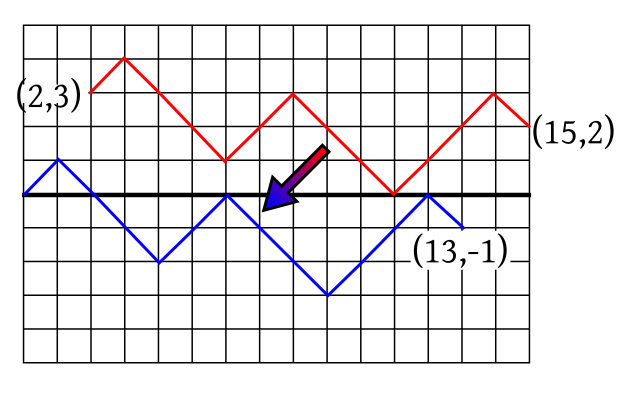
The red path is shifted to the blue path.
This shift establishes a
bijection between $PATH\big( (0,0), (13,-1) \big)$
and $PATH\big( (2,3), (15,2) \big).$ So they have the same
size. Hence the answer is $N_{13,-1} = \binom{13}{6}.$
■
Similar argument leads to the following theorem.
EXAMPLE 3:
Consider all paths of length $2n$ starting from $(0,0).$
What is the probability that the path returns
to $0$ at time $2n$?
SOLUTION:
There are $2^{2n}$ paths, all equally likely. So $|\Omega| =
2^{2n}.$
Let $A$ be the event that the path ends at $(2n,0).$
Then $|A| = N_{2n,0}.$
So $P(A) = \frac{|A|}{|\Omega|} =
\frac{N_{2n,0}}{2^{2n}}.
$
■
EXERCISE 2:
Find the numerical value of the probability you found in the
above example for $n=5.$ Check it by running the following
code:
event = c()
for(k in 1:5000) {
x = sample(c(-1,1), 10, rep=T)
event[k] = (sum(x)==0)
}
mean(event)
Now we are going to learn some theorems that are
interconnected. Their interconnections are shown below:
Since we are assuming that all paths in the sample space are
equally likely, computing probabilities of different events
amounts to finding the size of the events (i.e., counting the
number of paths in the event). So the theorems are presented in
terms of sizes of events rather than in terms of their probabilities.
We shall start with a discrete version of the intermediate value
theorem. See the followin diagram.
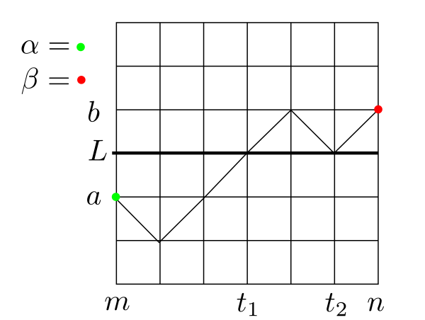
The path meets the horizontal line twice.
Here we have taken a horizontal line at an integer height and two points on two sides
of it. Then any path between these two points must meet this
horizontal line somewhere.
In the diagram above either $t_1$ or $t_2$ may be
chosen as $t.$
The theorem may appear trivial at first. If you think so, just try to
write down a proof before reading further.
Proof:We shall assume w.l.g. that $a < b$ (the other case is
similar).
Take any $p\in PATH\big((m,a),(n,b) \big)$
Let $M = \{r\in\{m,...,n\}~:~p(r)< L\},$ i.e., the times
spent under the horizontal line.
Clearly, $M$ is finite.
Also $M\neq \phi,$ since $m\in M.$
Let $k=\max(M)$ (well-defined, since $M$ is finite and nonempty).
Clearly, $k \leq n-2.$ (Why is $k\neq n$? Why is $k\neq n-1$?)
Our aim here is to find probabilities of various sets of paths, or, equivalently to find the sizes of
of these sets. We can often express them easily using the $N_{n,r}$ notation.
This is thanks to the reflection principle, which we discuss now.
Draw the horizontal line at height $5,$ say. Consider two
points $\alpha=(2,6)$ and $\beta=(6,4)$, say, that are on the same
side of the line.
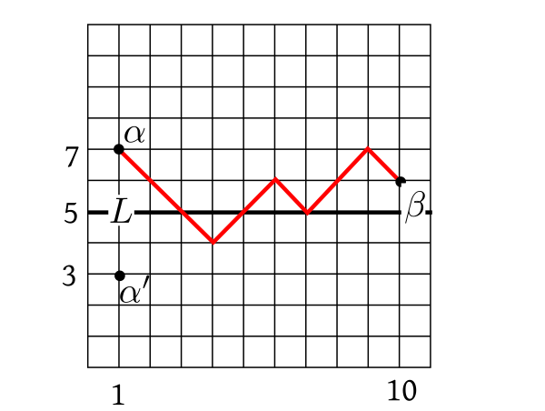
We want to count the number of paths from $\alpha$ to $\beta$ that
meets (i.e., touches or cuts) $L.$ One such path is shown in the diagram.
To find this number we employ a trick.
Let
$\alpha'$ be the reflection
of $\alpha$ along $L.$ Thus here, $\alpha' = (2,4).$
Then the required number
the same as $|PATH(\alpha',\beta).$
Proof:
Keep an eye on this picture while reading the proof:
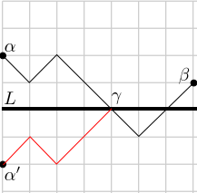
Reflection principle
Let $S$ be the set of all paths from $\alpha $
to $\beta $ that meets $L.$
Shall show that $|S|=|PATH(\alpha',\beta)|.$
Enough to show that there is a bijection $f:S\rightarrow PATH(\alpha',\beta).$
Step 1: Constructing $f$:
Take any path $p\in S.$ Let $\gamma$ be the first point where the
path meets $L.$ This is well-defined thanks to the
intermediate value theorem for paths.
Reflect around $L$ the part of the path
between $\alpha$ and $\gamma.$ This will give a path
from $\alpha'$ to $\beta.$ Define $f(p)$ to be
this path.
We shall now show that it is a bijection. The following diagram is an example showing the effect of this map:
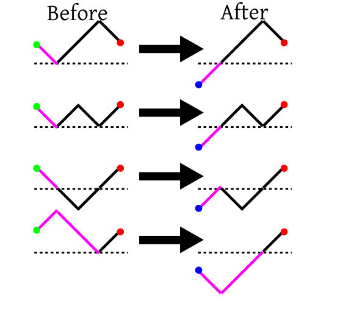
The purple part is reflected
Step 2: Showing onto:
Take any $q\in PATH(\alpha',\beta).$ Since $\alpha'$ and $\beta$ are
on opposite sides of $L,$ so the path must
intersect $L$ some time or other.
Let $\gamma$ be the
first such point. Reflect the part of $q$ between $\alpha'$ and $\gamma $ to get a path $p\in S.$
Clearly $f(p)=q.$
Step 3: Showing one-one:
Let $p_1,p_2\in S$ be such that $f(p_1)=f(p_2)=q,$
say. Shall
show that $p_1=p_2.$
Pick the first point $\gamma$ where $q$ meets $L.$
Then by property of $f$, the part of $q$
from $\gamma$ to $\beta$ is the same as the part
of $p_1$ from $\gamma$ to $\beta.$
Similarly, the part of $q$
from $\gamma$ to $\beta$ is the same as the part
of $p_2$ from $\gamma$ to $\beta.$
So $p_1$ matches $p_2$ between $\gamma $ and $\beta.$
Also, the part of $p_1$ from $\alpha$ to $\gamma$
is the reflection of the part of $q$ from $\alpha'$ to $\gamma.$
Similarly, the part of $p_2$ from $\alpha$ to $\gamma$
is the reflection of the part of $q$ from $\alpha'$ to $\gamma.$
So $p_1$ matches $p_2$ between $\alpha$ and $\gamma.$
Hence $p_1=p_2,$ as required.
[QED]
EXAMPLE 4:
Again take a horizontal line $L$ (at height $h$) and two
points $A:(a,p)$ and $B:(b,q)$ both above (not on)
$L.$ Here $a<b.$ How many paths are there
from $A$ to $B$ that does not meet $L?$
SOLUTION:
First count all paths from $A$ to $B.$ From it subtract
the number of paths that meet $L.$
Total number of paths from $A$ to $B$
is $N_{b-a,q-p}.$
The number of paths from $A$ to $B$ that
meet $L$ may be found using the reflection principle.
The reflection of $A$ along $L$ is at $A':(a,2h-p).$
So the required number is $N_{b-a,q-2h+p}.$
Hence the final answer is $N_{b-a,q-p}-N_{b-a,q-2h+p}.$
■
EXAMPLE 5:
How many paths are there from $(0,0)$ to $(10,4)$ that
are strictly positive at all times $>0?$
[Thanks to Krishnam Baregama for pointing out an inconsistency in the problem, which has now been corrected.]
SOLUTION:
This is very similar to the exercise above (with $L$ given
by the horizontal line at height $0$), except that we start
on the line itself.
However, it is obvious that our path must go to $(1,1)$
after the first step. So the last exercise may be applied
between $A:(1,1)$ and $B:(10,4).$
■
EXAMPLE 6:
How many paths are there from $(0,0)$ to $(6,2)$ that do not attain the value $2$
before time 6? Pictorially, we are counting paths like the second one in the following diagram.
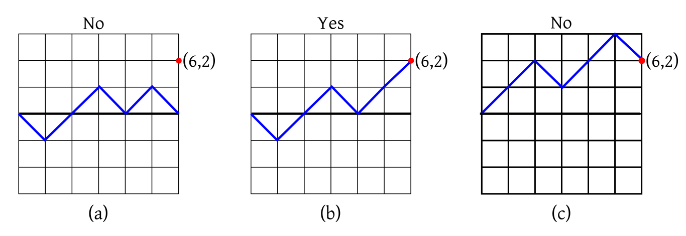
(a) Does not end at $(6,2).$ (b)
OK. (c) Attains 2 before times 6.
SOLUTION:
Notice that any valid path must pass through $(5,1)$, and
you have no choice about the last segment (it must be upwards). So we are
counting all paths from
$(0,0)$ to $(5,1)$ not
meeting the horizontal line at 6.
The answer may now be obtained easily using the reflection principle.
■
This logic immediately leads to the next theorem.
First let us look at some sample paths for $n=6$ and $r=2:$
Proof:
Such a path must pass through $(n-1,r-1)$ and $(n,r).$
Also it must never meet the the line at height $r$ up to and
including time $n-1.$
By reflection principle the path up to time $n-1$ may be
chosen in $N_{n-1,r-1}-N_{n-1,r+1}$ ways. The step from
time $n-1$ to $n$ is forced (it has to move up).
Hence the result.
[QED]
Here is another application of the reflection principle.
EXAMPLE 7:
How many paths are there from $(0,0)$ to $(11,1)$ that have maximum height
$4$ (i.e., touches 4, but does not cross it)?
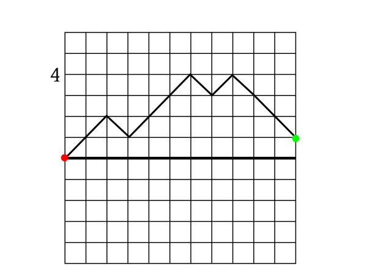
SOLUTION:
Find the number of paths from (0,0) to (11,1) that meet 4 (may or may not cross it). This is easy to compute using the reflection
principle. The answer is $N_{11,7}.$
Next find similarly
the number of paths from (0,0) to (11,1) that meet 5 (may or may not cross it). The answer is $N_{11,9}.$
The difference should give you the answer: $N_{11,7}-N_{11,9}.$
■
EXAMPLE 8:
How many paths of length 11 are there from $(0,0)$ that have maximum height
$4$?
SOLUTION:
This is very much like the last problem, except that the final height is not specified. Clearly the final height is something
$\leq 4.$ and $\geq -11.$
Find the number of all such paths with each of these final heights, and add. Don't worry, the sum is telescopic, and a massive
cancellation will save computational labour.
■
Proof:
We need to find the number of paths with maximum $r.$
Let $A$ be the set of all such paths.
We shall split this set
based on where the path ends. Clearly, it can end somewhere $\leq r.$
Fix any $k\leq r.$
Let $B_k=$set of all $n$-length paths with maximum $r$ and ending at
$k.$
Instead of working with $B_k$'s directly, we prefer to work with
$C=$ the set of all paths with maximum $\geq
r$ and ending at $k$
and
$D=$ the set of all paths with maximum $\geq
r+1$ and ending at $k$
Then we can compute $|C|$ and $|D|$ easily, and also use the fact
that $|B_k| = |C|-|D|.$
Now $|C|=N_{n,2r-k}$ and $|D|=N_{n,2(r+1)-k}= N_{n,2r-k+2}$ by the reflection principle.
So
$$
|B_k|=N_{n,2r-k} - N_{n,2r-k+2}.
$$
We shall now sum this over $k\in\{-n,..., r\}$ to obtain $|A|$:
$$A=\sum_{k=-n}^r (N_{n,2r-k} - N_{n,2r-k+2}).$$
The sum
has a two-step telescoping structure: each negative term
cancels the positive term two steps ahead.
So only the first halves of the first two terms survive, i.e., $N_{n,r}+N_{n,r+1}.$
We know that $N_{a,b}$ is 0 if $a,b$ have opposite
parities. Hence the result.
[QED]
Proof:
Such a path must either always be positive. Or always be
negative. Clearly, the number of all-positive paths is the same
as that of all-negative paths.
An all-positive path must visit $(1,1)$ immediately
after $(0,0).$ So enough to compute the number of
all-positive paths starting from $(1,1).$
Where can such a path end? It can end at $2r$ for
some $r\in\{1,...,n\}.$
By the reflection principle,
the total number of all-positive paths from $(1,1)$
to $(2n,2r)$ is
$$|PATH\big((1,1),(2n,2r)\big)|-|PATH\big((1,-1),(2n,2r)\big)|,$$
i.e., $N_{2n-1,2r-1}-N_{2n-1,2r+1}.$
So the total number of all-positive paths is the telescoping sum
$$
(N_{2n-1,1}-N_{2n-1,3}) +
(N_{2n-1,3}-N_{2n-1,5}) + \cdots + (N_{2n-1,2n-1}-N_{2n-1,2n+1})
= N_{2n-1,1}-N_{2n-1,2n+1} = N_{2n-1,1},
$$
since $N_{2n-1,2n+1}=0$ ($\because 2n+1 > 2n-1$).
Combining all-positive and all-negative paths, the total count is
$2N_{2n-1,1} =
2\binom{2n-1}{n}=\frac{2(2n-1)!}{(n-1)!n!} =\frac{(2n!)}{n!n!}
=\binom{2n}{n} = N_{2n,0}.$
[QED]
Isn't this surprising? The number of $2n$-length paths never returning to 0
equals the number of $2n$-length paths ending at 0. Could you prove it directly by establishing a bijection between
these two sets of paths?
Proof:
Let $A$ be the set of all $2n$-length paths that never return to 0.
Let $B$ be the set of all $2n$-length paths that never return to
before or at time $2n-2.$
Then we want to find $|B\setminus A|.$
Since $A\subseteq B,$ this is $|B|-|A|.$
Now $|A| = N_{2n,0}$ by the No 0-return theorem.
Also, by the same theorem, $|B| = 2^2N_{2n-2,0}.$
(Why?)
By the No 0-return theorem, total number of paths
of length $2n-2$ that never returns to $0$
is $N_{2n-2,0}.$ Then we are free to choose the next two
steps (from time $2n-2$ to time $2n$), which may be
done in $2^2$ ways.
Hence the result.
[QED]
EXERCISE 3:
Consider all paths of length $2n$ starting at $(0,0).$
What is the number of these paths that return to $0$
at $2r$ for some given $r < n?$ Also, how many of these
return to 0 from the positive side?
The red dot shows the last 0 hit, which occurs at time $2k.$
We can choose the part before the red dot in $N_{2k,0}$ ways. Also
independently of that, we can choose the part after the red dot
in $N_{2n-2k,0}$ ways, by the no 0-return theorem. Hence the result.
[QED]
We shall now consider the amount of time a path spends in the
positive side.
For example, the following path spends 8 times units in the
positive sides.
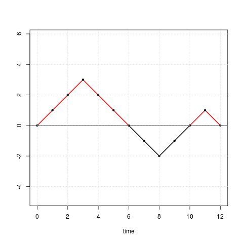
EXAMPLE 9:
Draw a path of length 10 starting from $(0,0)$ that
spends exactly 5 time units in the positive side.
Impossible! Each $0$-hit occurs at even time points, and the
path ends at 10, which is also even.
■
Proof:Case 1: $k=0$ or $n$:
We shall show the case for $k=n.$ The $k=0$ is similar.
Note that $k=n$ means the path is always above the $x$-axis (though it may touch the
axis). We shall convert it bijectively into a $(2n+1)$-length positive path not returning to
0. This conversion is done by
shifting the path 1 unit upwards and to the right, and joining $(0,0)$ with $(1,1).$ Click on the figure below
to see the conversion as an animation.
The number of $(2n+1)$-length paths not returning to 0 is twice the number of $2n$-length paths not returning
to 0 (since the last step is arbitrary). Out of these exactly half is positive. So the number of
$(2n+1)$-length positive paths not returning to 0 is
$N_{2n,0}=N_{2k,0}\times N_{2n-2k,0}$, as required.
Case 2: $1\leq k\leq n-1$:
Here we are considering paths with at least one 0-return. We shall group them by the time of their first 0-return and
whether the return occurs from the positive or the negative side.
Let's warm up by looking at an example with $n=7$ and $k=4.$
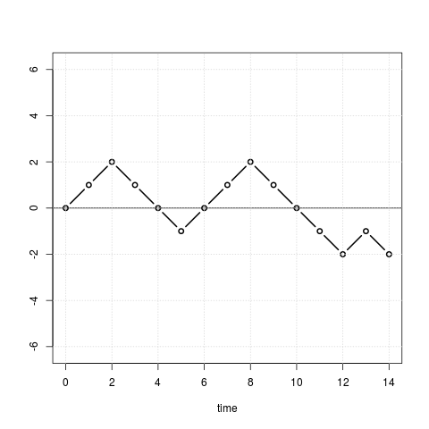
First 0-return at $4$
Here the first 0-return occurs at 4,
and from the positive side.
Let $B_{a,t}= $ {all $a$-length paths from (0,0) with first 0-return at time $t$ from positive side}.
Let $C_{a,t}= $ {all $a$-length paths from (0,0) with first 0-return at time $t$ from negative side}.
Note the following points about these sets:
The $B$'s and $C$'s are all disjoint.
By symmetry $|B_{a,t}| = |C_{a,t}|$
$A_{2n,2k}\subseteq \cup_{r=1}^k B_{2n,2r} \bigcup
\cup_{r=1}^{n-k} C_{2n,2r}.$
Do you see why
If the first 0-return from positive side is later than $2k,$ then we have already spent more
than $2k$ time units above the $x$-axis. Similarly, if the first 0-return is later
than $2n-2k$ from the negative side, then we have less than $2k$ time units left, and
we have not spent any time above the $x$-axis yet!
it is
enough to take $r$ up
to $k$ in the first
union, and up to $n-k$
in the second?
Thus
$$|A_{2n,2k}| = \sum_{r=1}^k |A_{2n,2k}\cap B_{2n,2r}| + \sum_{r=1}^{n-k} |A_{2n,2k}\cap C_{2n,2r}|.$$
Now we shall find $|A_{2n,2k}\cap B_{2n,2r}|$ and $|A_{2n,2k}\cap C_{2n,2r}|$ separately.
The paths in $A_{2n,2k}\cap B_{2n,2r}$ are positive up to time $2r$, when they return to 0 for the first time,
and then during the remaining $2n-2r$ times units spend exactly $2k-2r$ time units in the positive side.
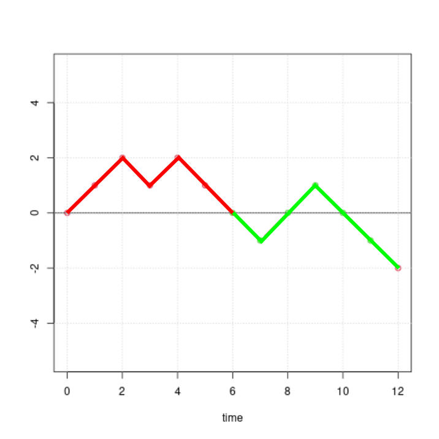
A typical path in $A_{12,8}\cap B_{12,6}.$
So
$$|A_{2n,2k}\cap B_{2n,2r}| = \underbrace{|B_{2r,2r}|}_{\small red}\times
\underbrace{|A_{2n-2r,2k-2r}|}_{\small green}.$$
This is the crucial step. Take time to understand it!
Similarly
$$|A_{2n,2k}\cap C_{2n,2r}| = |C_{2r,2r}|\times |A_{2n-2r,2k}|.$$
Combining these two we get
$$|A_{2n,2k}| = \sum_{r=1}^k |B_{2r,2r}|\times |A_{2n-2r,2k-2r}|+ \sum_{r=1}^{n-k}|C_{2r,2r}|\times |A_{2n-2r,2k}|.$$
Notice that $|B_{2r,2r}|$ and $|C_{2r,2r}|$ are the same, and each is equal to
$\frac 12|Z_{2r}|,$ where $Z_{2r} = $ number of $2r$-length paths with first 0-return
at $2r.$ Thus, we get our master equality:
$$|A_{2n,2k}| = \frac 12 \sum_{r=1}^k |Z_{2r}|\times |A_{2n-2r,2k-2r}|+ \frac 12\sum_{r=1}^{n-k}|Z_{2r}|\times |A_{2n-2r,2k}|.$$
Since $|Z_{2r}|$ is already known from the first 0-return theorem,
this equality expresses $A_{2n,2k}$ in terms of $A_{a,b}$'s with $a < 2n.$
This suggests that we should try induction on the path length.
We shall use induction on $n$ to prove the statement
$$S(n)~:~\forall k\in\{1,...,n-1\}~~|A_{2n,2k}|=N_{2k,0}\times N_{2n-2k,0}.$$
Here $n=2,3,4,...$
The following diagram shows the possible $(n,k)$ pairs as dots. The red dots were already dealt
with in case 1.
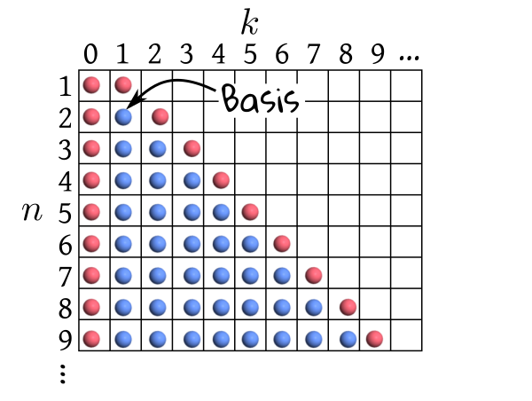
Each dot represents one $(n,k)$ pair.
We are applying induction for the blue dots only. $S(n)$ is the combined statement for all the
blue dots in the $n$-th
row. The basis corresponds to the topmost blue dot.
Basis: Here $n=2$ and $k=1.$ Do this case yourself by direct counting. There
should be exactly 4 such paths.
Hypothesis: Assume $S(n)$ for $n=2,...,m-1.$
Step: Shall show for $n=m.$
Take any $k\in\{1,...,n-1\}.$
From the master equality, the required number is
$$|A_{2n,2k}| = \frac 12 \sum_{r=1}^k |Z_{2r}| N_{2k-2r,0}N_{2n-2k,0}+ \frac 12\sum_{r=1}^{n-k}|Z_{2r}| N_{2k,0}N_{2n-2k-2r,0}.$$
Move the $r$-free terms out of the summations:
$$|A_{2n,2k}| = \frac 12 N_{2n-2k,0}\sum_{r=1}^k |Z_{2r}| N_{2k-2r,0}+ \frac 12N_{2k,0}\sum_{r=1}^{n-k}|Z_{2r}| N_{2n-2k-2r,0}.$$
Of course, you can now use the formula for $|Z_{2r}|$ from the first 0-return theorem and
start algebraic manipulations.
But can you see directly that the
first sum is just $N_{2k,0}?$
The $r$-th sumand is (the number of $2r$ length paths
with first 0-return at $2r$) $\times$ (the number
of $2k-2r$ paths starting and finishing at height 0). This
product is the number of $2r+(2k-2r)=2k$ length paths
starting and ending at height 0 with
first 0-return at $2r.$
Since we are summing over all possible values of $r$, the
sum is the number of $2k$ length paths starting and ending
at height 0. This is precisely $N_{2k,0}.$
EXERCISE 4:
(Ballot problem) two candidates are contesting in
a vote. There are $n$ voters who have cast their votes. The
votes are being counted with the $n$ ballot papers ordered
randomly.
Candidate $A$ has $p$ votes and
candidate $B$ gets $q=n-p (<p)$ votes. Show that the
probability that during the counting $A$ was always leading
is
$$
\frac{p-q}{p+q}.
$$
Let $y_i$ be the lead of $A$ over $B$
after $i$ ballot papers have been counted. If we
plot $y_i$ against $i,$ we shall get a random walk
starting from $(0,0)$ and ending at $(p+q,p-q).$
The total number of outcomes is $N_{p+q,p-q} = {p+q\choose p}
= \frac{(p+q)!}{p!q!}.$
The
favourable oucomes correspond to the paths that always remain
positive after starting from (0,0).
These paths must visit (1,1) after $(0,0).$
Hence #{paths from (0,0) to $(p+q,p-q)$ never returning to 0}
= #{paths from (1,1) to $(p+q,p-q)$ never visiting 0}
= #{paths from (1,1) to $(p+q,p-q)$}
- #{paths from (1,1) to $(p+q,p-q)$ visiting 0}
= #{paths from (1,1) to $(p+q,p-q)$}
- #{paths from (1,1) to $(p+q,q-p)$ visiting 0}
= $N_{p+q-1,p-q-1}-N_{p+q-1,q-p-1}$
= ${p+q-1\choose p-1}- {p+q-1\choose q-1} =
\frac{(p+q-1)!}{p!q!}(p-q).$
So the required probability is $\frac{p-q}{p+q},$ as required.
#{paths from $(0,0)$ to $(n,a)$ that are always $>-b$}
=#{paths from $(0,0)$ to $(n,a)$}-#{paths from $(0,0)$ to $(n,-a-2b)$} by reflection principle
= $N_{n,a}-N_{n,-a-2b}$
= $N_{n,a}-N_{n,a+2b}$ by symmetry.
EXERCISE 7: Let $b> a> 0.$ Show that the number of paths
from $(0,0)$ to $(n,a)$ that are
always $<b$ is $N_{n,a}-N_{n,2b-a}.$
#{paths from $(0,0)$ to $(n,a)$ that are always $<b$}
=#{paths from $(0,0)$ to $(n,a)$}-#{paths from $(0,0)$ to $(n,2b-a)$} by reflection principle
= $N_{n,a}-N_{n,2b-a}.$
EXERCISE 8: Show that if $a> c> 0$ and $b>0$, then the number of paths from (0,0) to $(n,c)$
that attain height $a$ and then attain height $-b$ before finishing at $(n,c),$ is $N_{n,2a+2b+c}.$
The paths may have also attained height $-b$ before attaining height $a.$
EXERCISE 9: Let $a>c>0$ and $b>0.$ Show that the number of
paths from $(0,0)$ which hit the
horizontal line at height $a$ and then lead to $(n,c)$
without having touched the horizontal line at height $-b$ is
$N_{n,2a-c}-N_{n,2a+2b+c}.$ (Note that the path may touch
the horizontal line at height $-b$ before hitting
the line at height $a.$)
Let $A = $ {paths from $(0,0)$ which hit the
horizontal line at height $a$ and then lead to $(n,c)$ }.
Let $B = ${paths in $A$ that attain height $-b$ after attaining height $a$ }.
Then the answer is $|A|-|B|.$ By reflection principle $|A| = N_{n,2a-c}$ and $|B| = N_{n,2a+2b+c}.$
Hence the result.
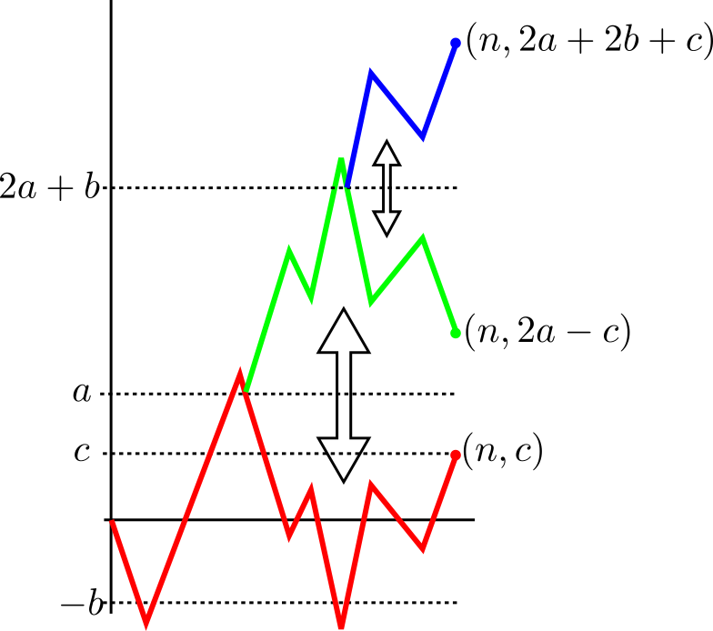
How $|B|$ is found by 2 reflections
EXERCISE 10: Prove that there are as many paths from (0,0)
to $(2n+2,0)$ with all interior vertices $>0$ as there
are paths from (0,0) to $(2n,0)$ where all interior
vertices are $\geq 0.$
Any path from (0,0)
to $(2n+2,0)$ with all interior vertices $>0$ must
visit (1,1) after $(0,0)$, and $(2n+1,1)$
before $(2n+2,0).$
So #{paths from (0,0)
to $(2n+2,0)$ with all interior vertices $>0$}
= #{paths from (1,1)
to $(2n+1,1)$ with all interior vertices $>0$}
= #{paths from (1,0)
to $(2n+1,0)$ with all interior vertices $\geq 0$}
= #{paths from (0,0)
to $(2n,0)$ with all interior vertices $\geq 0$}.
EXERCISE 11: True or false: The probability that before time $2n$ there occur
exactly $r$ returns to the origin equals the probability
that a return occurs at time $2n$ preceded by at
least $r$ returns.
For $k\in\{1,...,n\},$ the result follows directly from reflection principle. The result fails if $k\leq 0.$
One counterexample, if when $k=-10$ and $n=1.$ The result holds if $k>n,$ because then $P(A)=P(B)=0.$
EXERCISE 13: Find the fallacy in the following argument:
Consider the set of all paths of length 10 starting
from $(0,0).$
Let $A = $set of paths that never return to 0.
Let $B = $set of paths that never return to 0 at or before time 8.
Now define $C_k$ as the set of all paths
that do not hit 0 at time $2k.$ Then $A = \cap_1^5 C_k$
while $B = \cap_1^4 C_k.$ So $|A|\leq |B|.$
Again, any path that has not hit 0 at or before time 8 can be
continued for two more time units without hitting
0. So $|B| \leq |A|.$
Hence $|A|=|B|.$
Let the total number of balls in either box be $k.$ Let there be $w_i$ white balls in box $i.$ Then the
given condition says
$$\left(\frac{w_1}{k}\right)^n = \left(\frac{w_2}{k}\right)^n + \left(1-\frac{w_2}{k}\right)^n,$$
or
$$w_1^n = w_2^n + \left(k-w_2\right)^n.$$
Since $n\geq 3,$ hence by Fermat's last theorem, there cannot be any nonzero integer solution for this.
So either $w_1 = 0$ or $w_2 = 0$ or $k-w_2 = 0.$ Here $w_1$ cannot be zero, since then the lhs is
zero, while the rhs is positive. If $w_2 = 0$, then the first box has all whites and the second all blacks. If $k-w_2=0,$
then both the boxes has all whites.
::
EXERCISE 15: Let $u_{2n}$ denote the probability that a random path
of length $2n$ starting from $(0,0)$ passes
through $(2n,0).$ Also, let $u_0=1.$ Let $v_{2n}$
denote the probability that a random path of length $2n$
starting from $(0,0)$ returns to 0 for the first time
at $2n.$ Then show without using the explicit form
of $u_{2n}$ and $v_{2n}$ that
$$
v_2 u_{2n-2} + \cdots + v_{2n} u_0 = u_{2n}.
$$
[Corrected an error pointed out by Krishnam Baregama.]